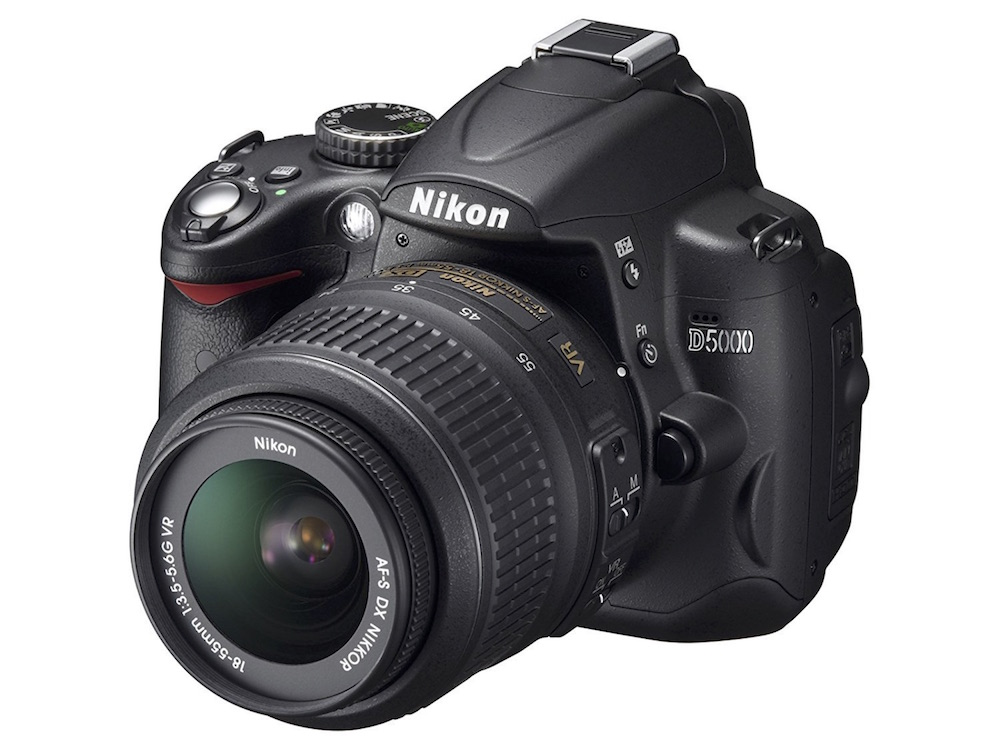

2.2 Cameras for stereo photography
For stereo reconstruction using photographs, the easiest setup consists of two digital cameras and two tripods. Although it is possible to use a mirror to split a single camera view into two views, the resulting photographs would have to be split into image pairs for calibration and digitizing.
Several DSLR (digital single-lens reflex camera) cameras satisfy the above specifications. Many come with a wireless remote shutter trigger, which removes the need to touch the camera at all when taking photographs. DSLRs typically permit complete manual control over the zoom and focus of the lens and remote shutter triggering. Cheaper digital camera models tend to have power-saving modes and other automated-only features that make it impossible to have the camera remain motionless for up to an hour while taking photographs. The stereo photography examples in this guide were captured using a Nikon D5000.
Additionally, lenses can be used with DSLRs that minimize image distortion. As of version 1.6, StereoMorph can account for standard types of lens distortion (e.g. pincushion and barrel distortion). But it's best if distortion can be avoided altogether simply by choice of lens. For example, an AF-S DX Nikkor 18-55mm lens (the basic lens that Niikon sells with their DSLR) zoomed in to 55mm has negligible distortion. Note that if an 18-55mm lens is zoomed out to 18mm (wide-angle), however, the lens does introduce a lot of distortion. If you have a zoom lens, zooming in as much as possible will reduce the distortion. The cost of a basic camera model (including a lens) that meets these specifications is typically less than $600 (USD).
The section Arranging the cameras has more details regarding specific camera settings and features for stereo arrangement and calibration.